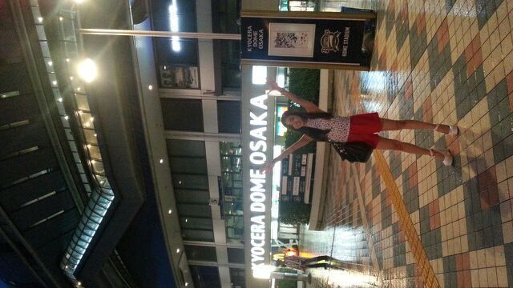

| 2013/09 08 Sun | ハリーポーターを改めて 一気に見てみたよ。 ろってぃ〜 |
はろ〜う\(*´▽`*)/
こんちゃんわ。
ろってぃ-ちゃんです。。
今日は 初上陸！！！トウッ
青森へ行って参りました。
セットリストは、
わん、 制服のマネキン
とぅー、 ガールズルール
すりっ、 扇風機
ふぉー、 狼に口笛を
ふぁいぶ、涙がまだ悲しみだった頃
しくーす、ぐるぐるカーテン(@_@)
せぶん、 おいでシャンプー
ですね。\(´▽`)/
最高!! いい曲いっぱいや。
青森の皆さん、
青森まで来てくださった皆さん
本当に ありがとうございました！
今年初めて、
青森のRABまつりとゆうお祭りに
参加したのですが
ほんっっとに、
たくさんの方が集まっていて
びっくりしました☆
青森の皆さんの前で
乃木坂のライブをお見せすることができ
本当に嬉しかったです！
MCでも ちょこまかと
しゃべらせた頂きありがとうございました。
MCの方に
「ろってぃ-は６歳なのかな？」
と言われ、
『えー、んーと、そんなに
しゃべり方幼いのかなあ(´・ω・)？笑』
と思ったよ。あーはん
なにより、楽しかったから良かった!!!
青森の 魚は新鮮 水は綺麗
涼しい 空気綺麗
アップルうまいってばよ★!!!
大好きっ (ω)//
ぴょん 。
わーーーー ☆☆☆

これはそう、
大阪ドーム〜 (*´∀｀)
京都握手会が終わった後
そのまま大阪に行ったんだよねん。
プリンシパルいらいでした、
実家に帰れたのは...
地元のフレンドたちと会えずに
すぐ東京もどっちゃったけど(´；ω；｀)
ちょうど EXILEさん達が
コンサート中やって
イーガルズの子達もきてたから
友達でもある
happinessのさあちゃんに
この写真おくりつけてやったよ
( ☆∀☆)笑
びっくりするかな？と思って ♪あは
どんっ♪
ドーム内にある有名人のお手手

ほなまた更新するねーん。
皆のことだいちゅき。
おやすみなさい( /〃▽〃)/ のし
この写真おくりつけてやったよ
( ☆∀☆)笑
びっくりするかな？と思って ♪あは
どんっ♪
ドーム内にある有名人のお手手
ほなまた更新するねーん。
皆のことだいちゅき。
おやすみなさい( /〃▽〃)/ のし
コメント(205)
2013/09/08 00:30